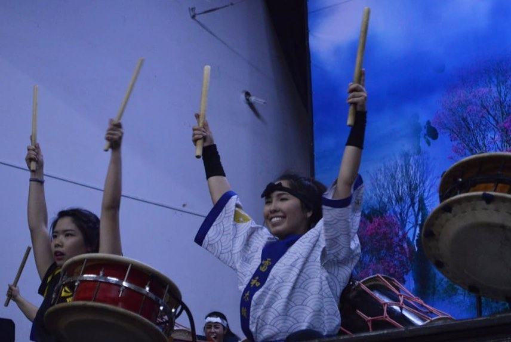
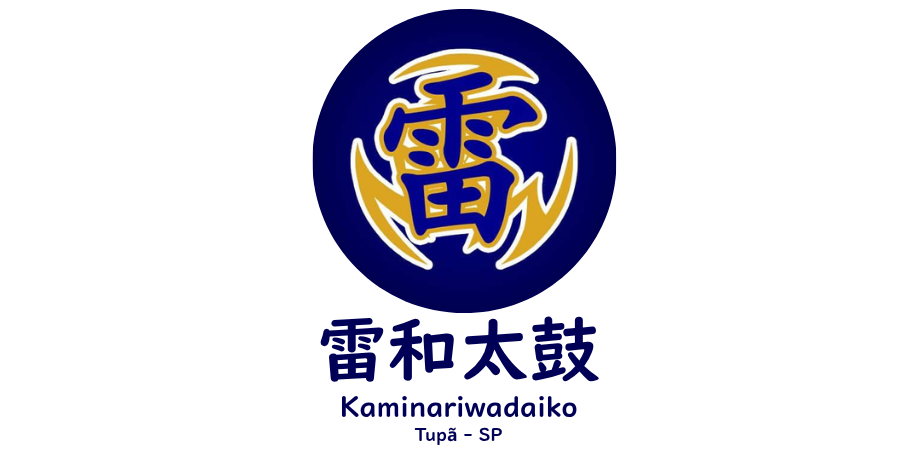
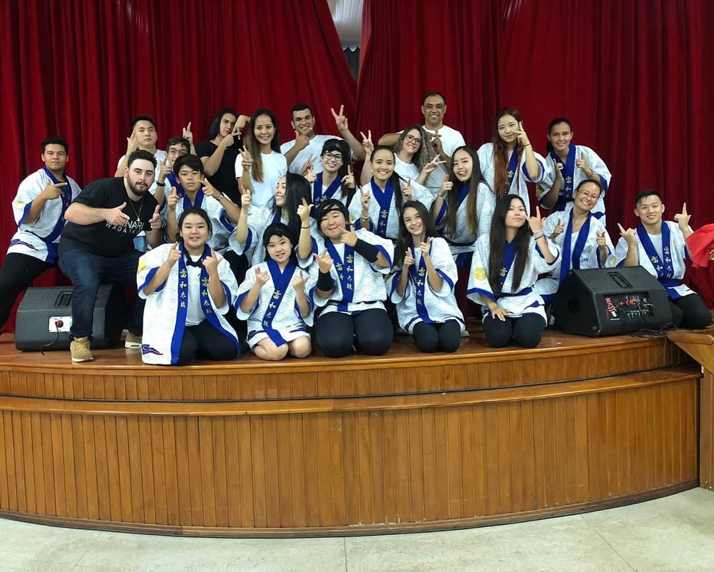

Departamento de Taiko - Kaminari Wadaiko
 A Batida que Move Corações
O Taiko é uma arte milenar que combina música, dança e a energia das artes marciais. O nosso grupo, o Kaminari Wadaiko, tem um importante histórico de preservar e difundir essa arte vibrante, trazendo a força e o espírito dos tambores japoneses para a nossa comunidade.
Aviso Importante: Atividades em Hiato
No momento, as atividades do Kaminari Wadaiko estão temporariamente suspensas. O grupo encontra-se em um período de hiato para reestruturação e planejamento.
Nossa previsão de retorno com novas turmas e ensaios é para 2026.

Nosso Legado de Apresentações
Com um histórico de apresentações marcantes em festivais, eventos e celebrações, o Kaminari Wadaiko sempre levou a energia contagiante do Taiko por onde passou. Aguardamos ansiosamente para retomar nossa agenda e compartilhar essa paixão novamente.
Interessado no Retorno em 2026?
A melhor forma de conhecer o Taiko é sentindo a vibração dos tambores. Se você tem interesse em participar das futuras turmas de iniciantes ou quer ser avisado sobre o retorno do grupo, entre em contato! Deixaremos seu nome em nossa lista de interesse.
Tenho Interesse!